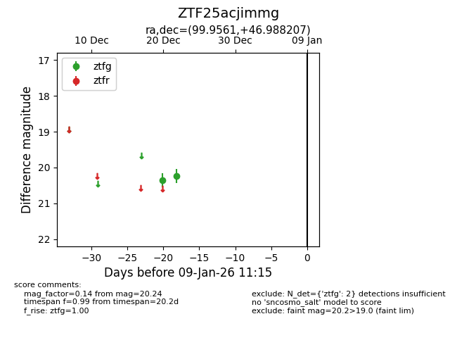
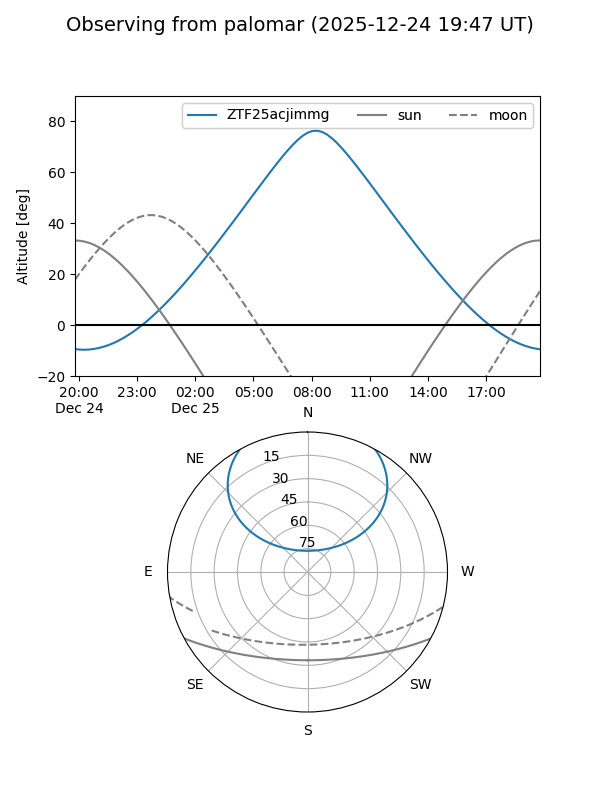

ZTF25acjimmg
Target ZTF25acjimmg at 2025-12-31 17:00
Aliases and brokers:
FINK:
Lasair:
ALeRCE:
alt names
ZTF25acjimmg (ztf,fink_ztf)
Coordinates:
equatorial (ra, dec) = 99.9561,+46.98821
equatorial (HMS+DMS) = 06:39:49.46,+46:59:17.54
galactic (l, b) = (168.5588,+17.61806)
Flags:
Photometry:
last ztfg=20.24
2 ztfg detections
Lightcurve

Visibility


Additional plots